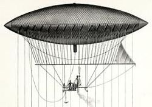

La historia de la aviación se remonta al día en el que el ser humano prehistórico se paró a observar el vuelo de las aves y de otros animales voladores. El deseo de volar está presente en la humanidad desde hace siglos, y a lo largo de la historia del ser humano hay constancia de intentos de volar que han acabado mal. Algunos intentaron volar imitando a los pájaros, usando un par de alas elaboradas con un esqueleto de madera y plumas, que colocaban en los brazos y las balanceaban sin llegar a lograr el resultado esperado.
Muchas personas decían que volar era algo imposible para las capacidades de un ser humano. Pero aun así, el deseo existía y varias civilizaciones contaban historias de personas dotadas de poderes divinos que podían volar. El ejemplo más conocido es la leyenda de Ícaro y Dédalo, que encontrándose prisioneros en la isla de Minos se construyeron unas alas con plumas y cera para poder escapar. Ícaro se aproximó demasiado al Sol y la cera de las alas comenzó a derretirse, haciendo que se precipitara en el mar y muriera.2 Esta leyenda era un aviso sobre los intentos de alcanzar el cielo, semejante a la historia de la Torre de Babel en la Biblia, y ejemplifica el deseo milenario del hombre de volar.
La historia moderna de la aviación es compleja. Durante siglos se dieron tímidos intentos por alzar el vuelo, fracasando la mayor parte de ellos, pero ya desde el siglo XVIII el ser humano comenzó a experimentar con globos aerostáticos que lograban elevarse en el aire, pero tenían el inconveniente de no poder ser controlados. Ese problema se superó ya en el siglo XIX con la construcción de los primeros dirigibles, que sí permitían su control. A principios de ese mismo siglo, muchos investigaron el vuelo con planeadores, máquinas capaces de sustentar el vuelo controlado durante algún tiempo, y también se comenzaron a construir los primeros aeroplanos equipados con motor, pero que, incluso siendo impulsados por ayudas externas, apenas lograban despegar y recorrer unos metros. No fue hasta principios del siglo XX cuando se produjeron los primeros vuelos con éxito. El 17 de diciembre de 1903 los hermanos Wright se convirtieron en los primeros en realizar un vuelo en un avión controlado,3 no obstante algunos afirman que ese honor le corresponde a Alberto Santos Dumont, que realizó su vuelo el 13 de septiembre de 1906.
Mas informacion sobre la historia de la aviacion...